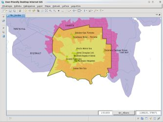
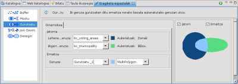
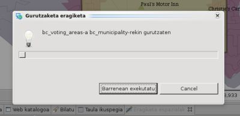
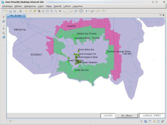

Bi geruzen arteko gurutzaketa geometrikoa kalkulatzen du.
Gurutzatu eragiketak bektore moteko bi Geruza iturrien featureak hartzen ditu eta bere feature geometrien arteko gurutzaketa kalkulatzen du, ondorioa Emaitza Geruza baten gordez.
Emaitza Geruzak featureren bat aukeratua badu, eragiketa beraien aurka burutuko da, bestalde, geruza guztiko featureak erabiliko dira.
Jatorrizko Geruzak ez dira inola ere aldatuko. Lehen Emaitz Geruza berri bat sortzen da, edo erabiltzaileak emaitzak gorde ahal diren bektore geruza izatedun eta editatu ahal den bat zehaztu dezake.
Gurutzatu eragiketak nahi diren geruzetatik aukeratutako featuren gain lan egiten du, edo geruza guztien gain ez bada aukeraketa bat ezartzen.
Adibide honetan, interesgarri diren geruzetariko batetik Feature bakar bat aukeratzen hasiko gara, 1 irudian agertzen den bezala.

1 irudia. Eragiketaren esparrua mugatu aukeraketa batekin.
Eragiketa espazialen bistara joan eta Gurutzatu aukeratu eragiketen zerrendatik.
Gurutzatu eragiketaren sarrera espezifikoen aukerak agertuko dira (2 irudia).

2 irudia. Gurutzatu eragiketaren kontrolak.

3 irudia. Aurrerakuntza leihoa
Eragiketa bukatzean, emaitza gordetzeko Geruza berri bat sortua izan bada, jadaneko Marpara automatikoki gehitua izango da.
4 irudiak sortu berri den Geruza (Intersect-1, orlegiz) erakusten du Mapari gehitua, Municipality eta Voting Areas Geruzak gurutzatzen dituen featurearekin.

4 irudia. Eragiketaren emaitza.
{kind=link}
{kind=link}
{kind=link}
{kind=link}